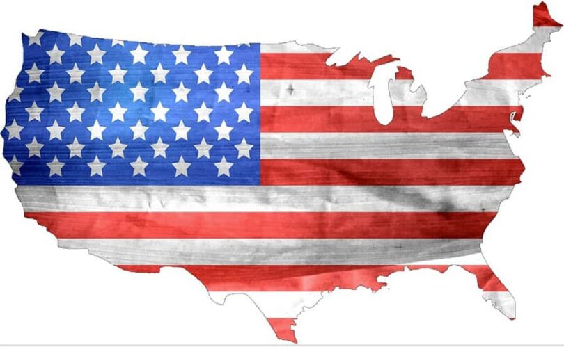

Meus Projetos
Por Luana Camejo Dernitz
Realizados:
- Ensino Fundamental (1999) - Medalha Destaque da Feira de Ciências do Colégio La Salle com o projeto acerca da Decodificação do Genoma Humano;
- Ensino Fundamental (1999) - Junior Achievement Empresa júnior Luz e Cor S/A;
- Faculdade de Direito (2005-2006) - Núcleo de Prática Jurídica (Família);
- Faculdade de Direito (2007) - Núcleo de Prática Jurídica (Penitenciário);
- Habilitação para inscrição na Ordem dos Advogados do Brasil (2009);
- Tese Defensiva que conseguiu a isenção de impostos para aquisição de um veículo para uma pessoa com deficiência total (2012).

(Ainda) Não Realizados:
- Livro - As Crônicas da Luz e Escuridão;
- Livro - Tudo o Que o Seu Advogado Não Quer Que Você Saiba;
- Projeto - Programa Starter, growdev;
- Projeto - Imigração para o Estados Unidos da América.